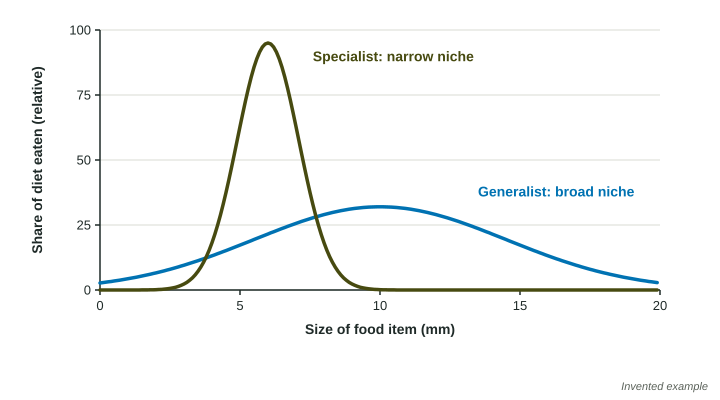

Some species can live almost anywhere and eat almost anything. Others need one kind of food, one kind of habitat or a narrow band of conditions. The difference shapes which species survive when the environment changes. Specialist and generalist describe the two ends of that range.
Narrow and broad niches
A species' niche is its role and the full set of resources and conditions it uses. The width of the niche is what separates the two kinds of species.

| Specialist species | Generalist species | |
|---|---|---|
| Niche | narrow | broad |
| Diet | one or a few foods | many foods |
| Habitat | one kind | many kinds, including towns and farms |
| Range of tolerance | usually narrow | usually wide |
| When the environment changes | more likely to decline or die out | more likely to cope, or even increase |
| Examples | giant panda (bamboo), koala (eucalyptus), monarch caterpillars (milkweed) | raccoon, coyote, rat, cockroach, house sparrow |
Why specialists are vulnerable
A specialist has put all its eggs in one basket. When its resource is plentiful and reliable, it is often very good at using it, better than a generalist would be. When the resource declines, it has nothing to switch to. Clearing its habitat, a new disease that kills its food plant, or a change in climate can each remove a specialist's key resource. Pandas are a clear case: bamboo forests flower and die back every few decades, and a panda in a small, isolated forest may have no other bamboo to move to.
Worked example. A woodpecker that feeds and nests only in large dead trees had 40 breeding pairs in a study area. After most of the old forest was cleared, 6 pairs remained. What was the percent change?
Setup: . Answer: .
In the same area, a bird that eats insects, seeds, fruit and scraps and nests in trees, shrubs or buildings went from 50 to 65 pairs. The specialist collapsed; the generalist grew.
Why generalists cope with change
A generalist can switch to another food or habitat when one becomes scarce. That is why generalists such as raccoons, coyotes and rats often do well where people have changed the land: towns and farms offer new foods (crops, garbage, pet food) and new shelters (buildings, sheds). Generalists also tend to spread when they are carried to new places, because they can use whatever resources they find.
Neither is simply better
Specialists and generalists each do best in different conditions. In a stable environment with plentiful resources, specialists can outcompete generalists. In a changing or disturbed environment, generalists have the advantage. When the exam asks which species is more at risk, look for the narrow niche and the changing condition.
On the exam
- Classify a species from what it eats, where it lives and the conditions it tolerates.
- Predict the effect of a change: the specialist that depends on the lost resource declines; the generalist switches.
- Explain with a chain: narrow niche, resource lost, no alternative, population falls.